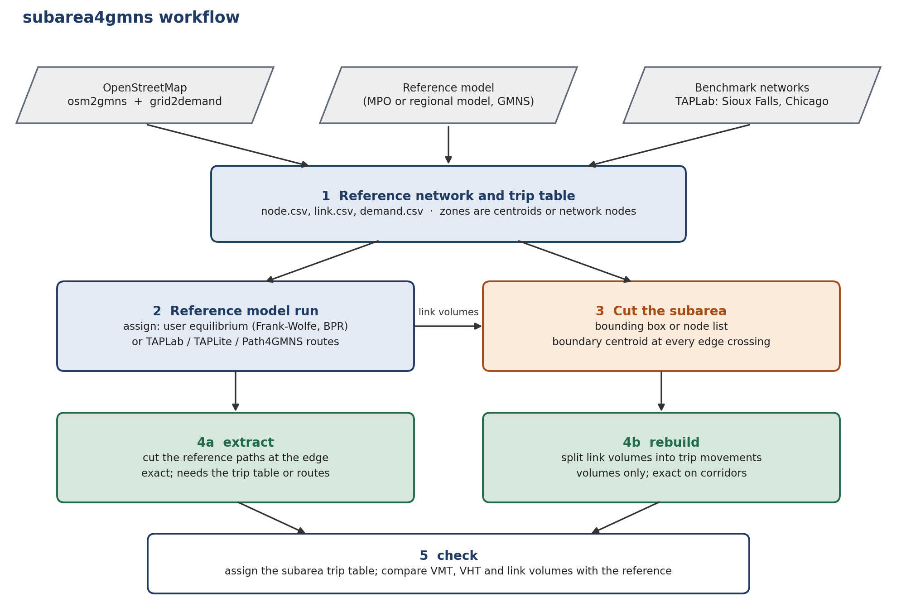

subarea4gmns · demo
Building subarea demand from link volumes
A subarea cut from a reference model (an MPO model, or a network built from OpenStreetMap with synthetic demand) needs its own trip table: one whose assignment reproduces the reference link volumes inside the cut. Step through the volume-only rebuild on a small corridor, then see the package's examples.
Every crossing of the cut becomes an entry or exit zone.
Volume in equals volume out at every ordinary node.
Peel entry-to-exit paths until no volume is left.
The movements reproduce every link volume.
Step through a small corridor
Link labels: reference PM volume. From step 3 on: volume still unassigned / reference volume; line width follows the unassigned volume.
Volume still to assign
0 of 5,480 vehicle-links assigned
Origin-destination table
| From | To | Vehicles |
|---|
Examples in the package
Subarea trip tables extracted from the reference model's paths, assigned on the subarea, and compared with the reference link volumes.
| Example | Reference model | Subarea | VMT | Link error (WAPE) |
|---|---|---|---|---|
| Sioux Falls | 24 nodes, 76 links, 360,600 trips | 10 nodes, 18 zones | +0.009% | 0.12% |
| Chicago Sketch | 933 nodes, 2,950 links, 1.14 million trips | 98 nodes, 58 zones | −0.015% | 0.39% |
| OpenStreetMap + grid2demand | ASU Tempe campus, 512 nodes, 55 zones | 190 nodes, 39 zones | −0.02% | 0.21% |
| Corridor (this page) | link volumes only | 4 links, 5 zones | exact | 0% |
The volume-only rebuild shown above is exact on corridors. On a grid with alternative routes, link volumes do not fix the paths; use the path-based extraction there.
The workflow

Run it
pip install git+https://github.com/asu-trans-ai-lab/subarea4gmns python examples/corridor/run_example.py # this page's corridor python examples/sioux_falls/run_example.py # path-based extraction and check subarea4gmns rebuild <subarea folder> --out demand.csv
Link volumes fix the through movements that share no link with another movement. Splits among movements that use the same links, such as trips to and from an internal zone at one access point, are one feasible choice rather than a unique answer. Results are reported at link and corridor level.